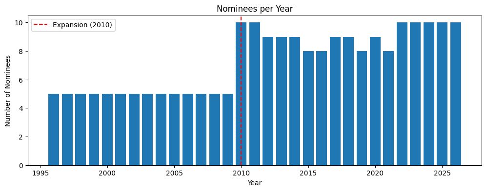
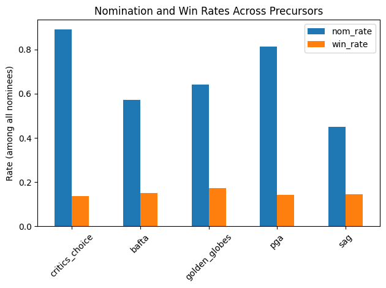
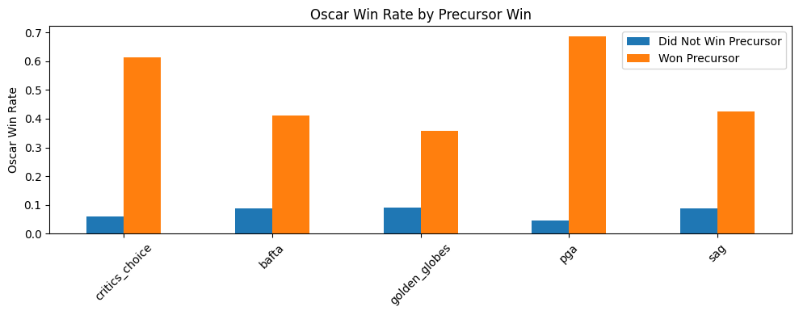
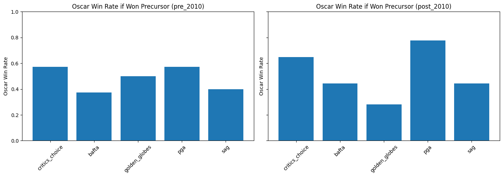
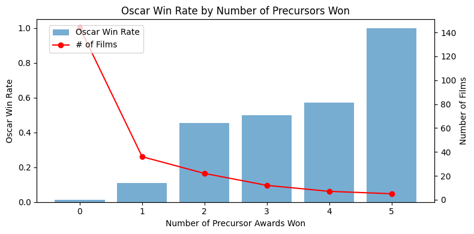
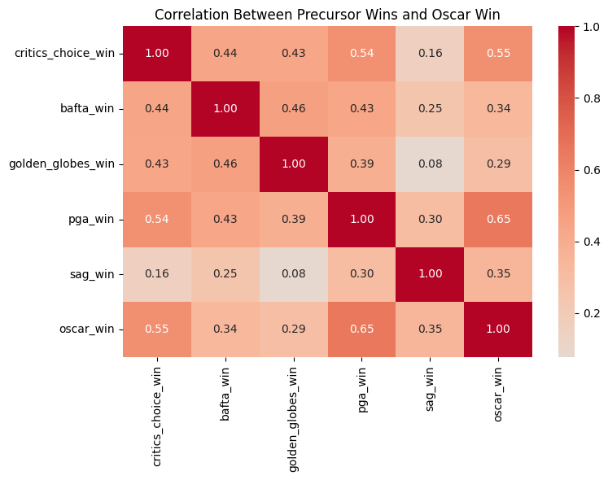
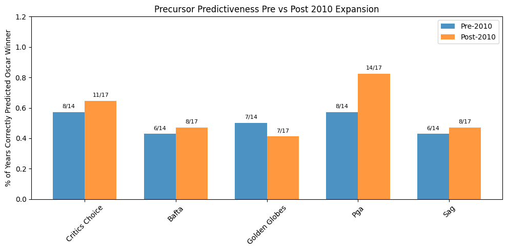

Code
import pandas as pd
import matplotlib.pyplot as plt
import seaborn as sns(226, 14)
title object
url object
year int64
critics_choice_nom int64
critics_choice_win int64
bafta_nom int64
bafta_win int64
golden_globes_nom int64
golden_globes_win int64
pga_nom int64
pga_win int64
sag_nom int64
sag_win int64
oscar_win int64
dtype: object
title 0
url 0
year 0
critics_choice_nom 0
critics_choice_win 0
bafta_nom 0
bafta_win 0
golden_globes_nom 0
golden_globes_win 0
pga_nom 0
pga_win 0
sag_nom 0
sag_win 0
oscar_win 0
dtype: int64
year critics_choice_nom critics_choice_win bafta_nom \
count 226.000000 226.000000 226.000000 226.000000
mean 2013.269912 0.889381 0.137168 0.570796
std 8.653974 0.314357 0.344788 0.496061
min 1996.000000 0.000000 0.000000 0.000000
25% 2007.000000 1.000000 0.000000 0.000000
50% 2014.000000 1.000000 0.000000 1.000000
75% 2021.000000 1.000000 0.000000 1.000000
max 2026.000000 1.000000 1.000000 1.000000
bafta_win golden_globes_nom golden_globes_win pga_nom \
count 226.000000 226.000000 226.000000 226.000000
mean 0.150442 0.641593 0.172566 0.814159
std 0.358298 0.480597 0.378711 0.389842
min 0.000000 0.000000 0.000000 0.000000
25% 0.000000 0.000000 0.000000 1.000000
50% 0.000000 1.000000 0.000000 1.000000
75% 0.000000 1.000000 0.000000 1.000000
max 1.000000 1.000000 1.000000 1.000000
pga_win sag_nom sag_win oscar_win
count 226.000000 226.000000 226.000000 226.000000
mean 0.141593 0.451327 0.146018 0.137168
std 0.349406 0.498730 0.353908 0.344788
min 0.000000 0.000000 0.000000 0.000000
25% 0.000000 0.000000 0.000000 0.000000
50% 0.000000 0.000000 0.000000 0.000000
75% 0.000000 1.000000 0.000000 0.000000
max 1.000000 1.000000 1.000000 1.000000 # oscar nominations changed from 5 best pictures to 10 in 2010
# separate these 2 eras
movies['era'] = movies['year'].apply(lambda x: 'post_2010' if x >= 2010 else 'pre_2010')
# nominees per year
nominees_per_year = movies.groupby('year').size().reset_index(name='num_nominees')
plt.figure(figsize=(12, 4))
plt.bar(nominees_per_year['year'], nominees_per_year['num_nominees'])
plt.axvline(x=2010, color='red', linestyle='--', label='Expansion (2010)')
plt.title('Nominees per Year')
plt.xlabel('Year')
plt.ylabel('Number of Nominees')
plt.legend()
plt.show()
# of all films nominated for the oscars, how did they perform at the precursors?
precursors = ['critics_choice', 'bafta', 'golden_globes', 'pga', 'sag']
nom_cols = [f'{p}_nom' for p in precursors]
win_cols = [f'{p}_win' for p in precursors]
base_rates = pd.DataFrame({
'nom_rate': movies[nom_cols].mean().values,
'win_rate': movies[win_cols].mean().values
}, index=precursors)
print(base_rates)
base_rates.plot(kind='bar', title='Nomination and Win Rates Across Precursors')
plt.ylabel('Rate (among all nominees)')
plt.xticks(rotation=45)
plt.tight_layout()
plt.show() nom_rate win_rate
critics_choice 0.889381 0.137168
bafta 0.570796 0.150442
golden_globes 0.641593 0.172566
pga 0.814159 0.141593
sag 0.451327 0.146018
# of films nominated/won at the precursors, how did they do at the oscars?
oscar_win_rates = {}
for p in precursors:
win_col = f'{p}_win'
rates = movies.groupby(win_col)['oscar_win'].mean()
oscar_win_rates[p] = {
'Did Not Win Precursor': rates.get(0, 0),
'Won Precursor': rates.get(1, 0)
}
rates_movies = pd.DataFrame(oscar_win_rates).T
print(rates_movies)
rates_movies.plot(kind='bar', figsize=(10, 4), title='Oscar Win Rate by Precursor Win')
plt.ylabel('Oscar Win Rate')
plt.xticks(rotation=45)
plt.tight_layout()
plt.show() Did Not Win Precursor Won Precursor
critics_choice 0.061538 0.612903
bafta 0.088542 0.411765
golden_globes 0.090909 0.358974
pga 0.046392 0.687500
sag 0.088083 0.424242
# Same thing but split by era
fig, axes = plt.subplots(1, 2, figsize=(14, 5), sharey=True)
for ax, era in zip(axes, ['pre_2010', 'post_2010']):
era_df = movies[movies['era'] == era]
rates = {}
for p in precursors:
r = era_df.groupby(f'{p}_win')['oscar_win'].mean()
rates[p] = r.get(1, 0)
ax.bar(rates.keys(), rates.values())
ax.set_title(f'Oscar Win Rate if Won Precursor ({era})')
ax.set_ylabel('Oscar Win Rate')
ax.set_ylim(0, 1)
ax.tick_params(axis='x', rotation=45)
plt.tight_layout()
plt.show()
# how many precursors did each film win?
movies['precursor_wins'] = movies[win_cols].sum(axis=1)
sweep_rates = movies.groupby('precursor_wins')['oscar_win'].mean().reset_index()
sweep_counts = movies.groupby('precursor_wins').size().reset_index(name='count')
sweep = sweep_rates.merge(sweep_counts, on='precursor_wins')
print(sweep)
fig, ax1 = plt.subplots(figsize=(8, 4))
ax2 = ax1.twinx()
ax1.bar(sweep['precursor_wins'], sweep['oscar_win'], alpha=0.6, label='Oscar Win Rate')
ax2.plot(sweep['precursor_wins'], sweep['count'], color='red', marker='o', label='# of Films')
ax1.set_xlabel('Number of Precursor Awards Won')
ax1.set_ylabel('Oscar Win Rate')
ax2.set_ylabel('Number of Films')
ax1.set_title('Oscar Win Rate by Number of Precursors Won')
fig.legend(loc='upper left', bbox_to_anchor=(0.1, 0.9))
plt.tight_layout()
plt.show() precursor_wins oscar_win count
0 0 0.013889 144
1 1 0.111111 36
2 2 0.454545 22
3 3 0.500000 12
4 4 0.571429 7
5 5 1.000000 5
# Correlation heatmap of all win columns + oscar_win
corr_cols = win_cols + ['oscar_win']
corr = movies[corr_cols].corr()
plt.figure(figsize=(8, 6))
sns.heatmap(corr, annot=True, fmt='.2f', cmap='coolwarm', center=0)
plt.title('Correlation Between Precursor Wins and Oscar Win')
plt.tight_layout()
plt.show()
# Count how many years each precursor correctly predicted the Oscar, pre vs post 2010
results = []
for p in precursors:
for era, era_df in movies.groupby('era'):
# Films that won this precursor in this era
precursor_winners = era_df[era_df[f'{p}_win'] == 1]
total_years = era_df['year'].nunique()
# Years where the precursor winner went on to win the Oscar
correct_years = precursor_winners.groupby('year')['oscar_win'].max().sum()
results.append({
'precursor': p.replace('_', ' ').title(),
'era': era,
'correct_years': int(correct_years),
'total_years': total_years,
'pct_correct': correct_years / total_years
})
results_df = pd.DataFrame(results)
print(results_df)
# Plot it
fig, ax = plt.subplots(figsize=(10, 5))
x = range(len(precursors))
width = 0.35
precursor_labels = [p.replace('_', ' ').title() for p in precursors]
pre = results_df[results_df['era'] == 'pre_2010'].set_index('precursor')
post = results_df[results_df['era'] == 'post_2010'].set_index('precursor')
bars1 = ax.bar([i - width/2 for i in x],
[pre.loc[p, 'pct_correct'] for p in precursor_labels],
width, label='Pre-2010', alpha=0.8)
bars2 = ax.bar([i + width/2 for i in x],
[post.loc[p, 'pct_correct'] for p in precursor_labels],
width, label='Post-2010', alpha=0.8)
# Add the raw correct/total as text on each bar
for bars, era_df in zip([bars1, bars2], [pre, post]):
for bar, p in zip(bars, precursor_labels):
correct = int(era_df.loc[p, 'correct_years'])
total = int(era_df.loc[p, 'total_years'])
ax.text(bar.get_x() + bar.get_width() / 2, bar.get_height() + 0.02,
f'{correct}/{total}', ha='center', va='bottom', fontsize=8)
ax.set_xticks(x)
ax.set_xticklabels(precursor_labels, rotation=45)
ax.set_ylabel('% of Years Correctly Predicted Oscar Winner')
ax.set_title('Precursor Predictiveness Pre vs Post 2010 Expansion')
ax.set_ylim(0, 1.2)
ax.legend()
plt.tight_layout()
plt.show() precursor era correct_years total_years pct_correct
0 Critics Choice post_2010 11 17 0.647059
1 Critics Choice pre_2010 8 14 0.571429
2 Bafta post_2010 8 17 0.470588
3 Bafta pre_2010 6 14 0.428571
4 Golden Globes post_2010 7 17 0.411765
5 Golden Globes pre_2010 7 14 0.500000
6 Pga post_2010 14 17 0.823529
7 Pga pre_2010 8 14 0.571429
8 Sag post_2010 8 17 0.470588
9 Sag pre_2010 6 14 0.428571